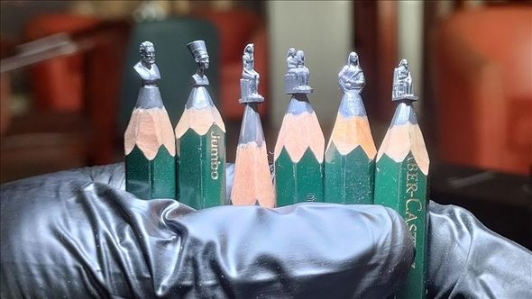

He creates interesting works by carving different shapes and figures on the tip of simple pencils. According to I. Bilal, he did not receive any special education in the field of art, he simply followed the work of creative people on social networks. "I am a law school graduate. I was going to be a lawyer, but when I graduated from university, I realized that I could not do this profession. I decided to turn to the art that I have dreamed of since childhood," said the Egyptian talent. According to him, he has to spend about 20-30 hours to create a work: "I see art as self-expression. All art forms have their value. Art in itself has a great value that cannot be evaluated in exchange for some material amount.
 Oxu.az